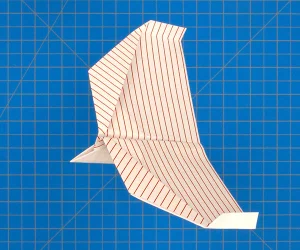
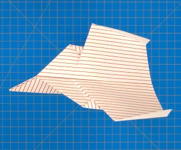
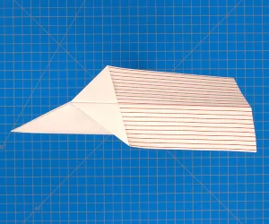

Wingtip Dart
Hard- Speed9
- Glide5
- Accuracy7
The birdlike wings give this fast flying paper airplane a lot of stability during flight.
Open folding guide · 6 stepsStep-by-step folding guides
Filter the hangar by difficulty and plane type, compare speed, glide and accuracy, then open a full diagrammed guide — 58 designs ready to fold.
58 guides match your search.
The birdlike wings give this fast flying paper airplane a lot of stability during flight.
Open folding guide · 6 steps
A stealthy flying wing that is optimized for maximum hangtime.
Open folding guide · 6 steps
A basic design with decent distance and speed.
Open folding guide · 5 steps
A basic dart with a blunt heavy nose.
Open folding guide · 6 steps
A fast paper airplane that can soar for miles with very little effort.
Open folding guide · 6 steps
An easy paper airplane that flies farther that most other designs.
Open folding guide · 6 steps
A great gliding paper airplane that can soar for many meters.
Open folding guide · 6 steps
This straight shooting airplane has a heavy nose which helps it go fast and far.
Open folding guide · 6 steps
An acrobatic paper airplane that spins through the air.
Open folding guide · 6 steps
Use a rubber band to add a little more power to the launch of this paper airplane.
Open folding guide · 6 steps
A smooth sailing paper airplane with a simple silhouette.
Open folding guide · 6 steps
A paper jet that can reach supersonic speeds as it soars through the air.
Open folding guide · 6 stepsA fast paper airplane that goes straight like an arrow.
Open folding guide · 6 steps
This easy paper airplane flies swiftly through the air in big circles.
Open folding guide · 6 steps
This paper airplane is shaped like a flying saucer.
Open folding guide · 6 steps
A fun and easy paper plane that might get you a little dizzy.
Open folding guide · 6 steps
This fast paper airplane soars well indoors and out.
Open folding guide · 6 steps
Designed to look like a fighter jet, this paper airplane is made for speed.
Open folding guide · 6 steps
Lightly throw this paper airplane into the air and watch it glide.
Open folding guide · 6 steps
A realistic paper airplane that looks like a real airplane.
Open folding guide · 6 steps
A compact and realistic looking paper airplane that resembles a fighter jet.
Open folding guide · 6 steps
This paper airplane is styled after Darth Vader's TIE Fighter from Star Wars.
Open folding guide · 6 steps
This classically styled, easy-to-fold paper airplane can fly over 100ft!
Open folding guide · 6 steps
An advanced long duration glider that can hover in the air for an extended time.
Open folding guide · 6 steps
A steady distance flyer that stays on target.
Open folding guide · 6 steps
A compact paper airplane that glides quickly across the room.
Open folding guide · 6 steps
You'll dig this big flying wing that stays aloft for ages.
Open folding guide · 6 steps
This paper airplane has a lot of stability and can fly for a long time.
Open folding guide · 6 steps
This paper plane will spin, spiral and corkscrew through the air like a stunt pilot!
Open folding guide · 6 steps
Learn how to make an origami paper airplane.
Open folding guide · 6 steps
If you are looking for speed and distance, this zippy dart is a great option.
Open folding guide · 6 steps
The distinctive tail shape gives this paper airplane a unique look.
Open folding guide · 6 steps
A small and fast flying paper plane.
Open folding guide · 6 steps
This paper airplane can fly a big loop-the-loop in the air and keep flying.
Open folding guide · 6 steps
A skinny paper airplane that flies fast and twists in mid-air.
Open folding guide · 6 steps
This fun paper glider flies well and has a unique look with a long tail.
Open folding guide · 6 steps
This paper airplane can do tricks, making it a very fun airplane to fly.
Open folding guide · 6 steps
This paper glider has a slow circular flight pattern.
Open folding guide · 6 steps
This paper glider will slide through the air in a slow and steady straight line.
Open folding guide · 6 steps
This designs looks like a superhero cat with cute little ears. Watch it fly slowly through the air!
Open folding guide · 6 steps
This paper plane looks like a fly and it flies like one too!
Open folding guide · 6 steps
This paper airplane glides for long distances and is perfect to throw from high areas.
Open folding guide · 6 steps
This paper airplane was designed to resemble an eagle in flight.
Open folding guide · 6 steps
This acrobatic paper airplane looks like a bee and darts around like one too.
Open folding guide · 6 steps
This paper boomerang will fly away from you, change directions and then fly back so you can catch it.
Open folding guide · 6 steps
This boxy paper plane is great for gliding through the air.
Open folding guide · 6 steps
An origami paper airplane inspired by the peaceful dove.
Open folding guide · 6 steps
An acrobatic paper airplane design that will corkscrew through the air.
Open folding guide · 6 steps
This paper airplane is fun to fold and fun to fly.
Open folding guide · 6 steps
A flying paper wedge with a sleek profile.
Open folding guide · 6 steps
This paper jet has a unique two level wing that gives it some style.
Open folding guide · 6 steps
The most basic design that almost everyone has tried.
Open folding guide · 4 steps
This bird-like paper airplane resembles a seagull gliding over the ocean.
Open folding guide · 6 steps
This plane is small and fast, allowing it to go wherever you want.
Open folding guide · 6 steps
A flying airfoil with almost no fuselage.
Open folding guide · 6 steps
This plane is made to have long wings and a very small body.
Open folding guide · 6 steps
This odd looking paper airplane has a large stabilizing tail fin.
Open folding guide · 6 steps
This paper airplane is made to look like a boat.
Open folding guide · 6 steps